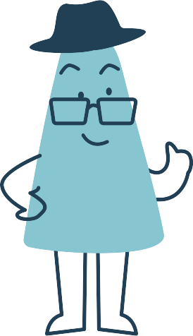
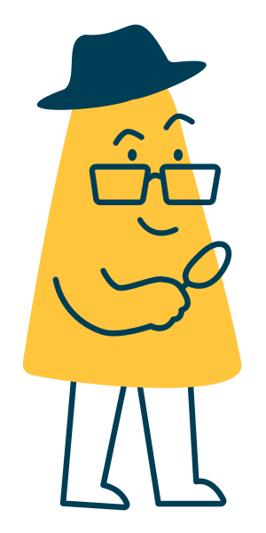
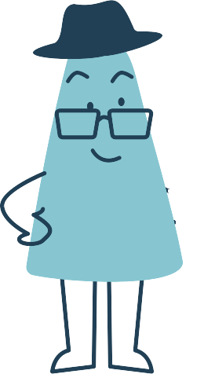
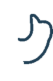

Demo interno
El personaje original del tablero de marca, extraído del PDF. Cada tarjeta muestra una clase CSS reutilizable de css/mascota.css.

.mc-flotar — para acompañar contenido sin distraer.

.mc-saludo — al entrar una sección en pantalla.


.mcw — el brazo es una capa separada que rota desde el hombro. Para momentos destacados (ej. el puntaje perfecto).
Espiar: el personaje asoma desde el borde del panel. Pensado para el explorador de datos o el pie de página. Clase .mc-espiar en un contenedor con overflow:hidden.